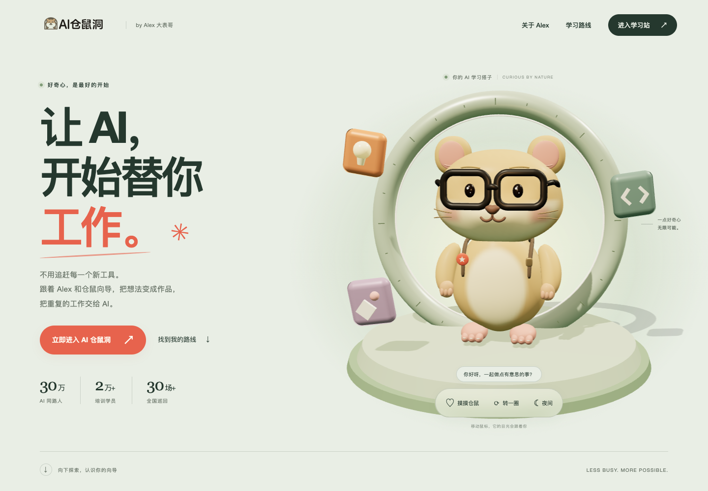
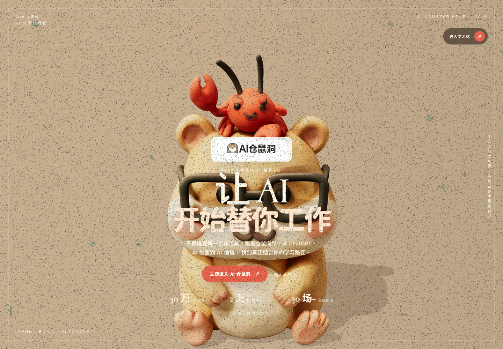
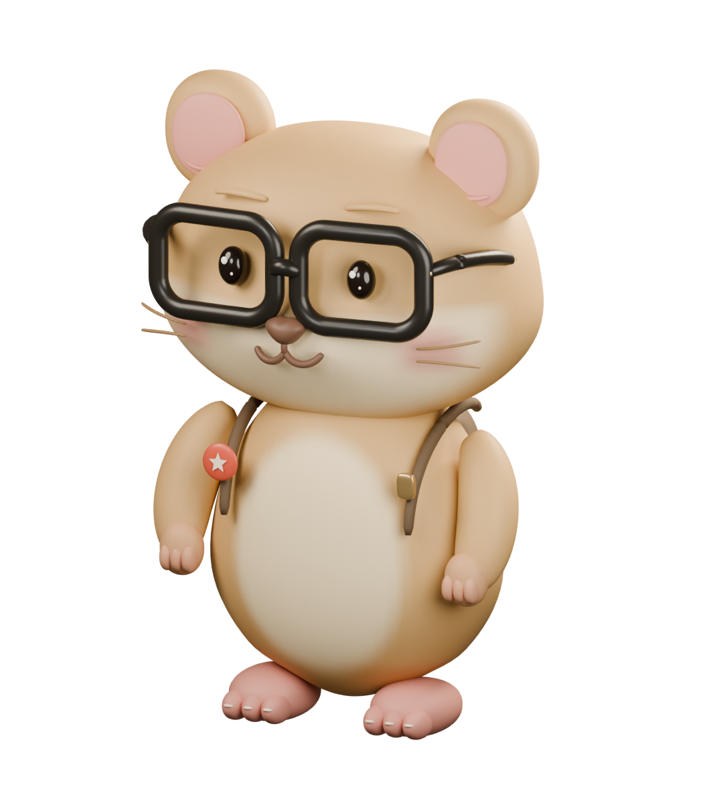
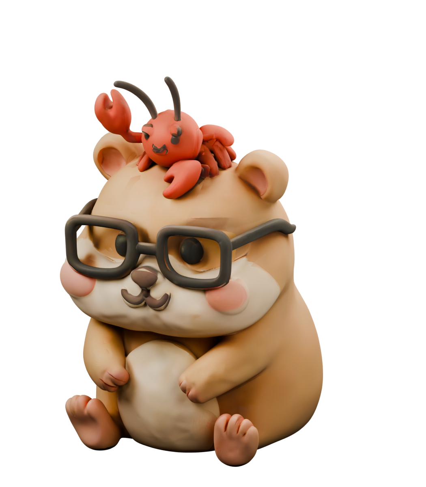
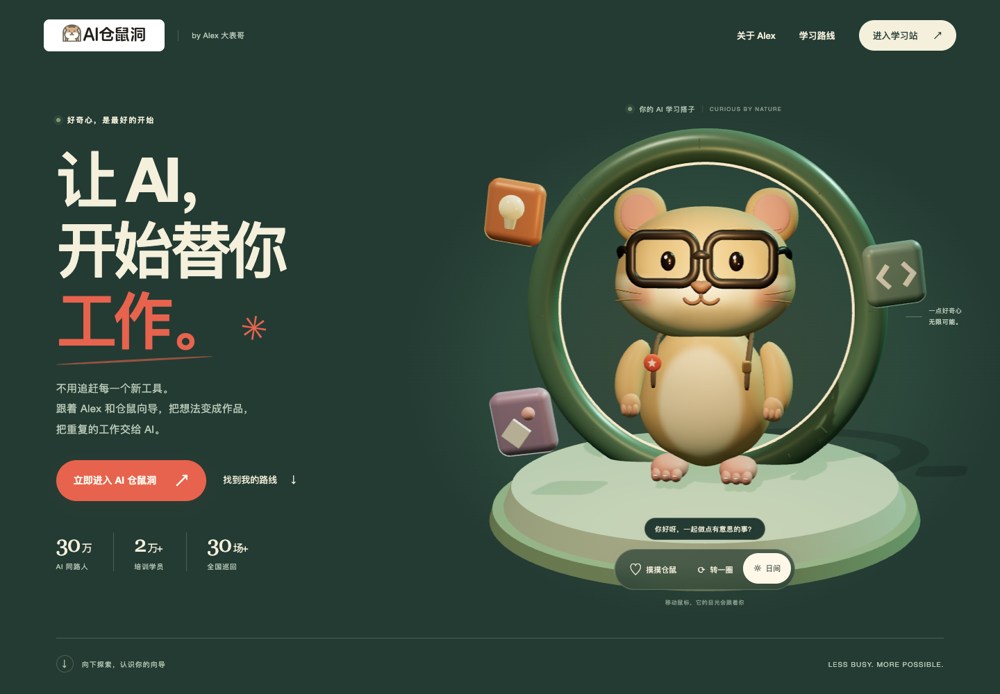

AI 仓鼠洞 · V2.0.0 升级档案 · 2026.09.08
让角色有回应，
让学习有入口。
从单一角色背景，到可以打招呼的仓鼠探索舱。重新雕琢模型、整理首屏信息、重排学习路线，让品牌更有记忆点，也让下一步更清楚。
主角看得清，
信息也有了呼吸感。
同为 1440 × 1000 的真实桌面页面。拖动分界线观察变化；切换首屏、Alex 故事与学习路线，查看整个阅读路径。


此张新版截图尚未放入报告目录；请保留完整 after 文件夹。
原版画面
米色场景、居中大角色，logo、标题、按钮和数据叠加在脸部与身体前方。全屏颗粒覆盖文字和模型。
本次更新
左侧文字与右侧探索舱分区，保留清楚的品牌入口；浅鼠尾草、深墨绿与品牌橙建立层次，环形舱门和学习道具形成完整空间。
细节，不只停在表面。
两张模型图采用同一相机与灯光，并统一为 3.59 单位高。这里比较的是 Blender 摄影棚渲染，网页实时效果见上方截图。


真实 Blender 建模与 Cycles 渲染 · 原创参数化网格
旧版网格保留，新版模型、源文件与生成脚本独立交付。
看见五官，也看见性格。
连续头壳、颊囊和奶油色脸部渐变；光亮眼珠、双层高光、心形鼻、短胡须。厚度镜框、鼻梁、镜腿与金属铰链保留眼镜仓鼠的识别特征。
从整体摆动，到独立回应。
头、双眼、双臂均有独立枢轴。转头、眨眼和挥手来自真实部件。梨形躯干、手爪、脚趾、小背包与学习徽章补足近看细节。
16.04 MB → 1.90 MB
501,070 → 93,696
| 资产指标 | V1 | V2 |
|---|---|---|
| GLB 字节数 | 16,039,824 | 1,895,128 |
| 顶点 | 290,841 | 46,978 |
| 三角面 | 501,070 | 93,696 |
| 网格 / 材质 | 1 / 1 | 20 / 11 |
| 纹理图像 | 1 | 0，使用顶点色 |
| 动作结构 | 单一整体网格 | 头、眼、肩部独立 |
这些是文件与模型统计，不是 FPS 或加载速度测试。新模型的独立部件也增加绘制次数；网页总开销还包括探索舱、光照与道具。未据此宣称转化率提升。
从“看它动”，
到“和它打招呼”。
两段录屏来自真实页面操作。可分别播放，也可从起点同时播放。新旧流程与时长不同，因此同时播放用于比较体验，不表示动作逐帧对应。
指针影响镜头 → 长时间轴逐项出现 → 垂直滚动驱动路线横移 → 到达学习站入口。
仓鼠回应指针与触摸、转身展示背包、日夜灯光切换；经历按需展开，路线直接选择。
| 体验环节 | V1 / 原版 | V2 / 本次实现 |
|---|---|---|
| 角色待机 | 整体上下浮动、整体轻摆；没有独立眨眼。 | 轻呼吸、眨眼；头部和眼睛可独立变化，形成更清楚的生命感。 |
| 鼠标移动 | 指针驱动相机横向 ±0.32、纵向 ±0.2。 | 轻微镜头视差与仓鼠转头共同回应，角色反馈更直接。 |
| 摸摸仓鼠 新增 | 没有对应操作。 | 点角色或使用 HTML 按钮，触发轻跳、挥手和一条回应文字；也可用键盘操作按钮。 |
| 转一圈 新增 | 只能随页面进度小幅转向。 | 主动触发完整转身，能查看背包和背面造型；结束后回到稳定姿态。 |
| 日夜切换 新增 | 固定暖色环境。 | 切换页面底色、主光、轮廓光和舱门发光；按钮公开当前开关状态。 |
| Alex 经历 | 5 项长时间轴；条目 750 ms 进入，子元素间隔 90 ms。 | 5 项可展开内容；按需查看，300 ms 高度与透明度过渡，保留角色／资历与全部要点。 |
| 学习路线 | 竖向长距离滚动变为横向画廊，入口有 100vw 留白。 | 4 个路线 tab；点击、方向键、Home / End 可选择，内容面板 220 ms 转换。四组共 16 条学习入口保留。 |
| 滚动方式 | 7 个相机位置根据整页进度连续切换。 | 保留浏览器原生滚动；首屏与 Alex 区只作轻微换位，路线不再依赖横向滚动。 |
| 减少动态效果 | CSS 动画缩短，但 Three.js 与 Framer 滚动动态仍持续。 | DOM 与 WebGL 都读取系统偏好，抑制非必要运动，保留状态反馈与导航；最终核验见验证记录。 |
| 场景不可用 | 主要依赖模型加载完成后移除全屏遮罩。 | 网页文字先可读；模型加载错误或 WebGL 不可用时展示真实模型静态图，学习入口仍可访问。 |
此表根据当前源代码与交付范围整理。最终浏览器验证、设备范围和限制以 verification.json 为准；不承诺未经测量的帧率或网络加载时长。
细节改变，
品牌与内容留下来。
手机保留独立文字区与可点击操作；夜间灯光提供另一种观看氛围。改版的中心仍是 Alex、仓鼠向导与清楚的学习入口。
{kind=link}
{kind=link}
小屏幕，按阅读顺序展开。
原版文案叠在主角前方。新版将文字与场景按纵向排列，移动端操作通过按钮完成；路线和经历不需要依赖 hover 才能使用。查看手机互动区原图 ↗
{kind=link}

新版夜间截图待归档
{kind=link}
换一种灯光，仍能看清下一步。
日夜切换同时调整文字、背景与 3D 光源，让角色材质与环形舱门获得不同层次。操作可立即发现，转化入口保持可读。
原 logo 与眼镜仓鼠
保留 AI 仓鼠洞、Alex 大表哥和友好语气。新角色独立建模，原版角色文件继续保存。
5 项经历与原有成果
保留 30 万粉丝、2 万+ 学员、30 场+ 全国巡回，以及原有经历和资历，未新增成绩承诺。
4 条路线，16 个入口
入门、绘画、编程、效率四组内容保留，改为主动选择，标题与适合人群仍可查看。
同一个学习站
主 CTA 和学习内容继续进入 ai.alexdbg.com，在新窗口打开。
数字与资历沿用项目原有文案，本次没有进行外部真实性审计。详细内容核对见 内容保留清单。
借鉴好的方法，
形成自己的表达。
参考重心是交互因果、玩具尺度、叙事清晰和可用性。下列为制作方与官方资料，不把案例奖项视作转化效果证据。
- 01Bruno Simon
借鉴“操作 → 世界回应”。用短小、容易发现的互动，让仓鼠有性格，同时保留直接入口。
- 02Choo-Choo World / Lusion
借鉴微缩玩具尺度、柔和倒角、日夜氛围与触屏可操作性，不引入完整沙盒编辑器。
- 03Devin AI / Lusion
借鉴用故事与交互解释复杂 AI 产品的方式；每一段画面承担一个明确传播任务。
- 04Porsche: Dream Machine
借鉴少数关键画面组织旅程与材质光影。此案例是 CG 影片，并非实时交互网页。
- 05Active Theory / XR Experiments
借鉴材质区分、光照与可降级效果的思路，避免将重型视觉实验直接搬入引流站。
- 06W3C / Reduced Motion
让系统减少动态效果偏好同时作用于 DOM 与 WebGL，操作、文字和导航保持可用。
研究还参考了 Drei AdaptiveDpr 官方文档。本项目设置了画布像素比上限；未把“有上限”描述为已实现自动性能分级。完整核实范围、未采用方案与设计参数见 research.md。
每一次更新，
都有证据，也能回看。
旧页面、旧模型与新资产分开保存。报告链接到原始素材、生成脚本和验证记录，便于继续迭代或向他人展示。
- ① 冻结原版
原始提交
d44d71e。从提交独立导出源码，再启动旧版捕获；原版全屏颗粒、布局和动效原样保留。 - ② 保存真实新旧材料
before/与after/保存页面截图、视频和捕获记录；同一摄影条件下渲染两代角色，并提供模型统计。 - ③ 交付可继续编辑的版本
新版 Blender 源文件、GLB、建模与对比脚本同仓库管理。原版
ai-hamster.glb、sen.blend及许可文件继续保留。 - ④ 记录验证与发布凭证
最终构建、交互核验和限制写入验证记录；提交、标签、部署状态与回退信息以版本说明为准。
如何回看和回退
本地完整原版位于项目文件夹下的 版本留档/v1-d44d71e/，包含源码 ZIP、静态站点和逐文件 SHA-256 清单。进入其中的 site 文件夹，通过 HTTP 启动即可独立回看：
python3 -m http.server 5174 --bind 127.0.0.1若要从 Git 检出旧版进行维护，可新建独立 worktree，保留当前工作目录与未提交修改：
git worktree add --detach ../ai-hamster-v1-review d44d71ee9809357a1be50da1c42d989d36d7df4a线上恢复旧版时，再以旧提交构建产物重新部署。最终仓库提交、标签与部署地址请查看 版本发布说明。
离线展示：直接打开本文件，并保留同目录的模型图、before 和 after 文件夹即可读图、播放视频与拖动对比；外部参考链接需要联网；源码和脚本链接需要保留完整仓库。版本标签、验证范围与工作流入口记录在版本发布说明中。